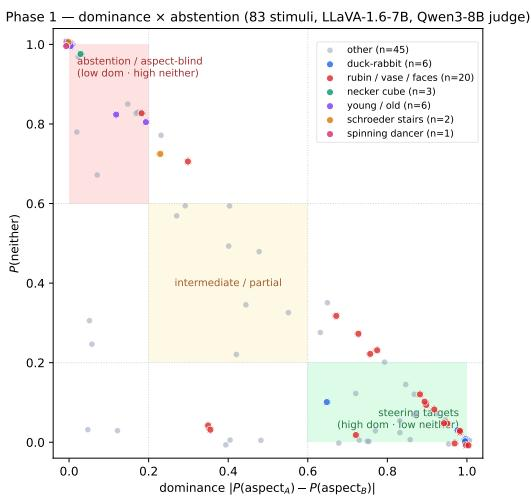
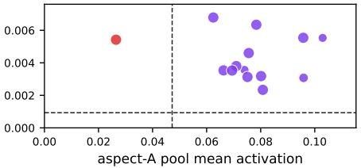

先说结论。它和通用视觉自监督的关系在于：在 LLaVA 消费的 CLIP 层训练 TopK SAE，分析 ambiguous image captioning 中 vision tower 与 language head 的不对称... 中高相关；详见方法、贡献和实验边界。

Figureure 1 · Three behavioral regimes over 83 bistable stimuli (LLaVA-1.6-7B, 40 geFigure 1. Three behavioral regimes over 83 bistable stimuli (LLaVA-1.6-7B, 40 generations each, Qwen3-8B judge). Bottom-right: default-dominant; top-left: aspect-blind under neutral prompting, splits into force-dominant (7/10, ≥70/30 commitment under forced choice) and force-balanced (3/10, \~50/50, the Necker cubes).这张图/表用于判断 Vision-Language Asymmetry in Bistable Image 的实验收益来自哪里。重点看替换、消融或跨模型设置下趋势是否一致，而不是只看单个最高分。

Figureure 2 · Phase 3: per-stimulus aspect-A (x-axis) vs aspect-B (y-axis) pool meanFigure 2. Phase 3: per-stimulus aspect-A (x-axis) vs aspect-B (y-axis) pool mean activation across all six groups. Marker color gives the per-stimulus classification (purple = superposition, blue = dominance A, red = dominance B, gray = neither); marker size is proportional to Phase 1 neutral-prompt dominance score. Dashed lines show per-pool thresholds (median activation on opposite-aspect controls). Purple dominates: both pools above threshold (vision-side superposition) for 50 of 69 stimuli.这张图来自论文 PDF 的结构化抽取。当前用于辅助理解 Vision-Language Asymmetry in Bistable Image 的方法或实验，请结合正文精读段落一起看。
核心问题
它和通用视觉自监督的关系在于：在 LLaVA 消费的 CLIP 层训练 TopK SAE，分析 ambiguous image captioning 中 vision tower 与 language head 的不对称。
方法拆解
在 LLaVA 消费的 CLIP 层训练 TopK SAE，分析 ambiguous image captioning 中 vision tower 与 language head 的不对称